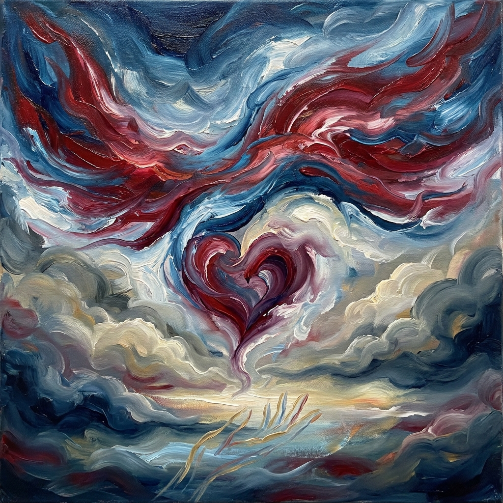

Cuore sempre in volo

Quando voglio
ho le ali più grandi del mondo
lo sguardo si espande
il cuore si fa tutt'uno con il cielo
sfioro con le dita
da qui all'eternità.
Ho affilato pure le parole
or d'amore or di guerra;
Buttati giù! Buttati giù!
Il mio nemico
colpito e affondato.
ho le ali più grandi del mondo
lo sguardo si espande
il cuore si fa tutt'uno con il cielo
sfioro con le dita
da qui all'eternità.
Ho affilato pure le parole
or d'amore or di guerra;
Buttati giù! Buttati giù!
Il mio nemico
colpito e affondato.
Paola Spremulli